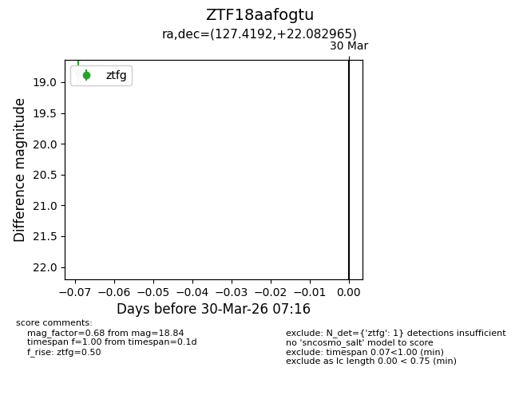
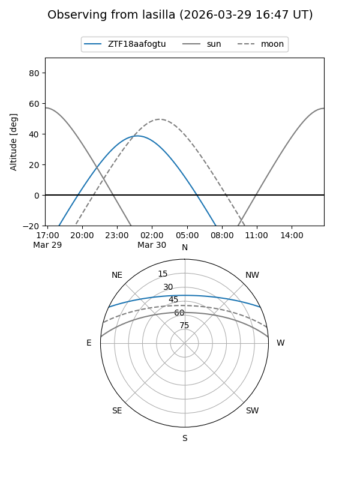
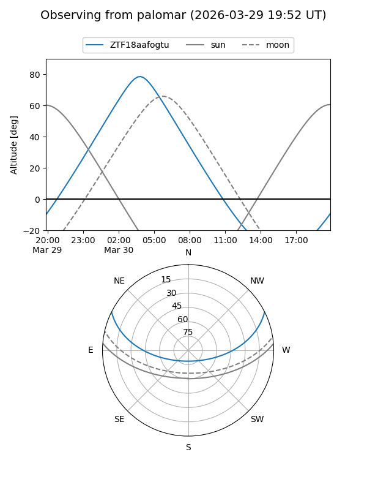

ZTF18aafogtu
Target ZTF18aafogtu at 2026-03-30 07:19
Aliases and brokers:
FINK: link
Lasair: link
ALeRCE: link
alt names
ZTF18aafogtu (ztf,fink_ztf)
Coordinates:
equatorial (ra, dec) = 127.4192,+22.08297
equatorial (HMS+DMS) = 08:29:40.61,+22:04:58.68
galactic (l, b) = (202.2505,+30.94439)
Flags:
Photometry:
last ztfg=18.84
1 ztfg detections
Lightcurve

Visibility


Additional plots